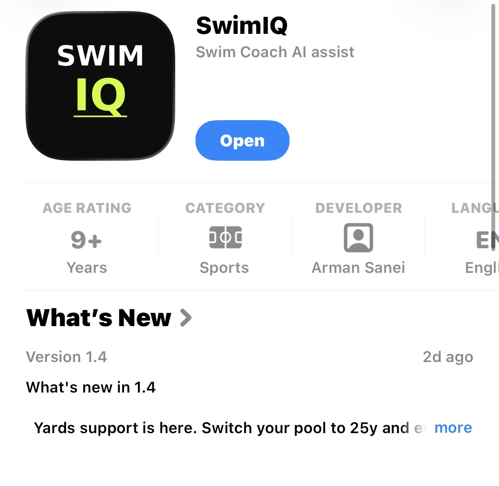
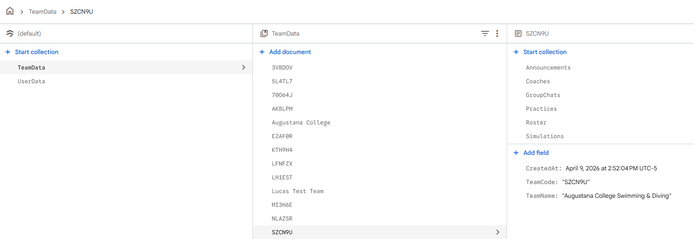

Welcome to our Week 12 update! Following our transition into "Feature Lock" last week, our team has shifted entirely from building new capabilities to refining and securing the ones we already have. This week brings a significant announcement regarding our brand identity, alongside deep technical updates on our backend architecture, multi-tenant security rules, and critical bug fixes as we close in on our Sprint 3 deadline.

The Name Change Pivot
Since the start of our SI project, we have been working under the name SwimIQ. It’s a name that perfectly encapsulated our vision: bringing intelligent, data-driven analytics to swim team management. However, as we prepare for a broader release and potential deployment beyond our academic environment, we conducted a thorough audit and discovered that another application is already published and operating under the "SwimIQ" name.
While it is never easy to abandon a name you've grown attached to, pivoting now is a strategic necessity. Proceeding with a contested name introduces unnecessary trademark risks and creates immediate confusion for coaches and athletes trying to find our platform. We are currently evaluating new names that capture our mission of comprehensive team management and analytics. Right now, we are leaning heavily towards SwimSphere, but we haven't made a final decision just yet.
For the time being, you will still see "SwimIQ" across our GitHub Pages dev blog, repository URLs, and existing documentation. Once the new name is finalized, we will execute a coordinated migration encompassing our domain names, Firebase project configurations, repository names, and all frontend UI branding.
Security Hardening & Multi-Tenant Architecture
In Week 11, we outlined our goals for security hardening. This week, we translated those goals into concrete backend architectural changes, fundamentally reshaping how data is accessed and isolated.
Migrating to a Multi-Tenant Firestore Schema
To guarantee data isolation between different swim organizations, we completely overhauled
our Firestore database schema. We transitioned from flat, global collections to a strict
hierarchical structure centered around the TeamData/{team_id} path. All practices,
meets, rosters, and team-specific events are now strictly nested under their respective
team document.
This multi-tenant approach inherently prevents data collisions. We updated our backend
read/write utilities and our Python FastAPI data processing pipeline to enforce
team_id propagation on every single request. For cross-team backend analytics,
we implemented secure collection_group queries, ensuring global data access is
restricted solely to internal machine learning data loaders.

Enhanced Authentication & Firestore Security Rules
With the new schema in place, we implemented rigorous Firestore Security Rules. Previously, some routes relied on frontend implicit checks. Now, all user-specific and team-specific routes are locked down at the database level.
- Role-Based Access Control (RBAC): A user's authentication token is
now cross-referenced with their team affiliation and role. Coaches have read/write
access to their
TeamData/{team_id}, while athletes have read-only access to specific subcollections and read/write access only to their own profiles within the globalUserData/collection. - Frontend Route Protection: We mirrored these backend rules in our React application, ensuring that unauthenticated users are immediately redirected to the login flow, and athletes cannot navigate to coach-exclusive dashboard routes.
Data Encryption at Rest
Protecting sensitive health data, such as the high-frequency Apple HealthKit and Android Health Connect heart rate logs we integrated last sprint, is non-negotiable. We verified that all data residing in Firestore is encrypted at rest by default using Google's server-side encryption. This ensures an impenetrable layer of privacy for our athletes.
Bug Squashing & UX Refinement
Alongside security, we've actively tackled several critical bugs that were negatively impacting the user experience. As we approach our final deployment, smoothing out these rough edges is a top priority:
Fixing the Firebase Sign-Up Flow
We resolved a persistent auth/invalid-credential error that was occurring
during the user sign-up flow. The issue was traced to how our frontend was handling
state for users who already had existing Firebase Auth accounts but hadn't fully
completed their profile setup. By improving our error handling logic and adding
graceful fallbacks, the onboarding process is now much more robust.
Synchronizing Notification States
We also fixed an annoying desync issue with in-app notifications. Previously, reading a message in the dedicated message thread wouldn't always update the notification dropdown in the navigation bar. We unified the state management so that marking a message as read correctly clears the unread badge globally across the UI, providing a much more cohesive feel.
With our data architecture secured, bugs being systematically squashed, and our rebranding strategy taking shape, the finish line is clearly in sight. In the coming week, we will focus heavily on finalizing our UI branding updates and running end-to-end testing. Stay tuned for our Sprint 3 final update!